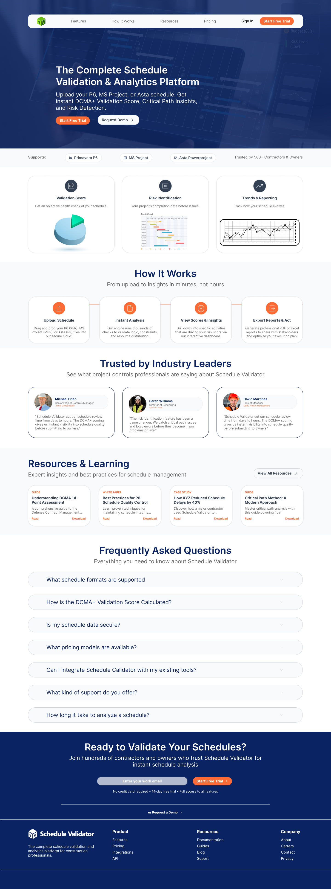

Case Study · B2B SaaS
A landing page that makes a complex construction-analytics product feel fast and approachable — structured to build trust with a technical audience and move them toward a trial or demo.

Schedule Validator lets contractors and project owners upload P6, MS Project, or Asta schedules and get an instant DCMA+ validation score, critical-path insights, and risk detection.
The challenge: the product is genuinely complex, and the audience is skeptical and technical — project-controls engineers, owners, and contractors who don't respond to fluff. The homepage had to make a sophisticated analytics tool feel fast and approachable, instill confidence, and earn every scroll toward a single goal: a trial signup or demo request.
Benchmark for tone and polish: a modern, minimal B2B SaaS standard — restrained, data-forward, zero clutter.
A technical audience converts on credibility, not slogans. I placed a trust bar directly under the hero — supported tools (Primavera P6, MS Project, Asta) and a contractor/owner trust signal — so proof arrives before the pitch.
Deep navy/blue as the primary — the color of reliability and enterprise software — paired with a single high-contrast accent reserved exclusively for CTAs, so the eye always knows where the next action is.
No hard-hat stock photography. The hero leans on the product's own world — a Gantt / dashboard aesthetic — so the first impression is the value (the analytics), not decoration.
Benefits, How-It-Works, testimonials, resources, and FAQ each map to a specific conversion job — reducing friction, answering objections, building authority — and lead to the final "Validate your schedules" anchor.
01
Clear value proposition with "Start Free Trial" and "Request Demo" side by side — capturing both ready and cautious buyers.
02
Trust bar and a benefits grid (Validation Score, Risk ID, Trends, Easy Upload) with UI thumbnails showing the real flow.
03
A scannable Upload → Analyze → Insights → Export timeline that makes the product feel effortless.
04
Testimonials and an FAQ that disarm trust barriers, leading into a full-width final CTA as the conversion anchor.
The project shipped as a complete, dev-ready package — not just a visual:
Explore the rest of my work, or get in touch about a senior design role.